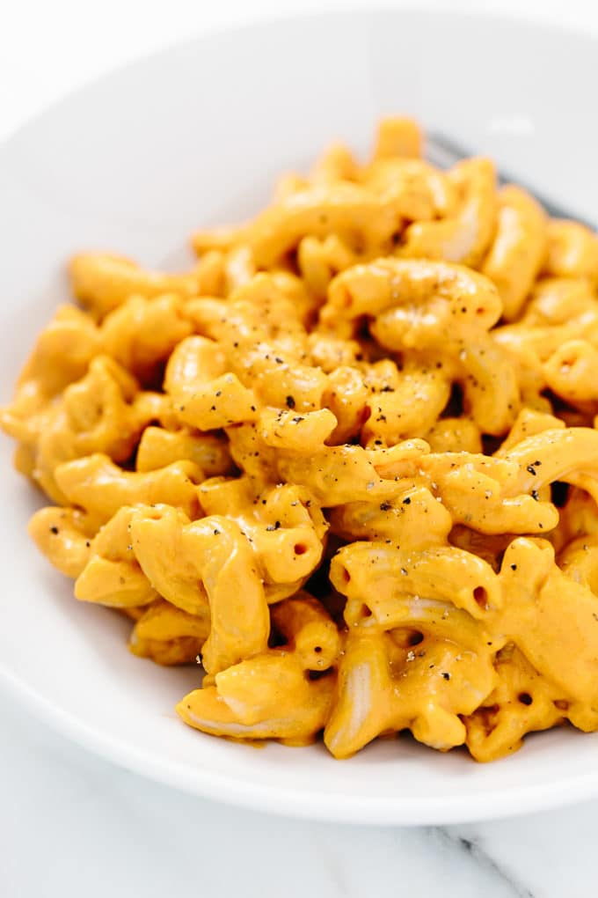

Vegan Mac-N-Cheese

Elbow pasta coated in plant-powered smoky vegan cheese sauce.
Description
The cheese is made with blended cashews, yeast, apple cider vinegar,
and other alternatives. All it takes is just a few minutes t create the mixture and to thicken the rich cheese sauce.
Then, simply spoon it over pasta, stir to coat, and serve.
That's it! Simple vegan homemade mac-n-cheese!
Ingredients
Pasta
- 12 to 16 ounces of bron rice elbow pasta (depending on the desirec level of cheesyness
Smoky Cashew Cheddar Cheese
- 2/3 cup raw cashews soaked in water for 10 minutes
- 1 ⅓ cups filtered water
- ⅓ cup chopped and seeded roasted red peppers
- 2 tablespoons nutritional yeast
- 2 tablespoons arrowroot powder/flour/starch
- 2 tablespoons apple cider vinegar
- 2 teaspoons smoked paprika or to taste
- 1 teaspoon sea salt, plus more to taste
- Freshly ground black pepper, to taste
- Optional
- Pinch of cayenne pepper
- Dash of hot sauce